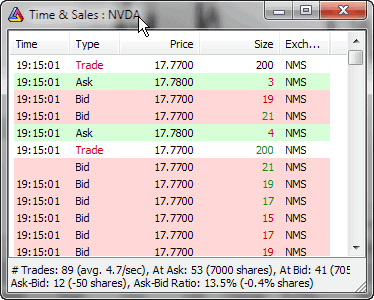

NOTE: Standard Edition is limited to 1 Time & Sales window; Professional Edition allows an UNLIMITED number of Time & Sales windows open simultaneously.
A Time & Sales window provides information about every bid, ask, and trade streaming from the market. Each row displayed represents either a new trade, a new bid, or a new ask that is sent by the streaming data source.

Each line in a Time & Sales window is marked with a color to make it easier to distinguish between various conditions.
Coloring rules are:
Time & Sales window in version 5.30 shows some "recent statistics" regarding trading, namely:
A little background:
Ask minus bid: the positive numbers represent more transactions occurring
on the ASK side than on the BID side. This in theory may mean more buying
than selling, but in practice things are largely dependent on the security
traded.
Especially, dark
liquidity pools do not show in order books and may report trades
to the tape several seconds later, thus invalidating the relationship
between
bid/ask
and
actual
trade prices.
IMPORTANT:
These are temporary, short-term stats - they cover ONLY trades displayed in
the T&S window since the opening of the window or
resetting stats.
You can reset statistics using the right-click menu: "Reset Stats"